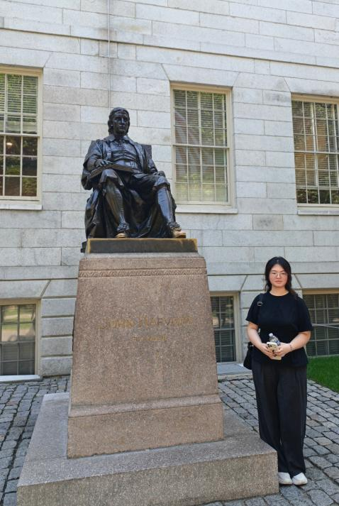
Leader
Nianyi Cheng
Hi everyone, I’m Nia from Shanghai. I have a strong interest in biology and this is my first time participating in iGEM. It’s a pleasure to team up with you all, and I look forward to working together.
VCA-NEBS / Team
People behind the PET hydrolase project.
Leader

Leader
Hi everyone, I’m Nia from Shanghai. I have a strong interest in biology and this is my first time participating in iGEM. It’s a pleasure to team up with you all, and I look forward to working together.
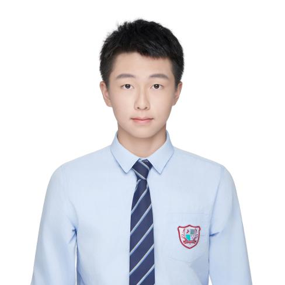
Leader
Hello everyone! I’m Jack, and I’m currently in ninth grade. In my spare time, I love playing the piano. Music has helped me develop patience and concentration, which I think are also valuable qualities in scientific research.I’m very excited to be part of the iGEM team because I have a strong interest in synthetic biology. I hope to learn from my teammates while contributing as much as I can to our project. I’m ready to work hard and explore science together with all of you. Thank you!
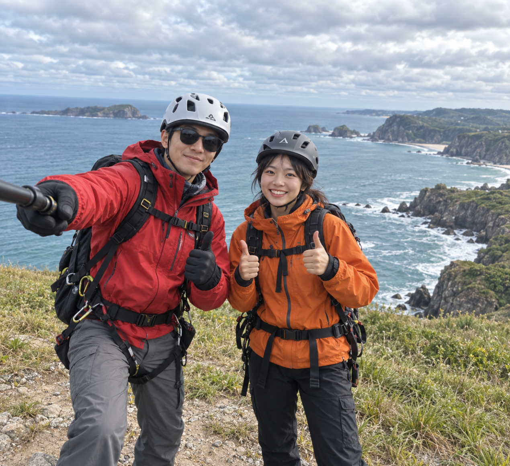
Leader
Mary W. Shenzhen to Tokyo. Passion: Biology, Chemistry, digital art(design/portraits), somehow good at making ppts and giving speeches. Usually work alone but I will do my best to cooperate. (Why is everyone so talented??) We got this!
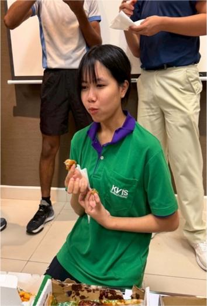
Leader
Hello everyone, my name is Katie. My hobbies are exercising and planting cacti.
Ever since I applied to KVIS, my heart has been set on Genetics and Biotechnology. It is the field I hope to dedicate my career to as a researcher.
By joining this iDEC competition, I hope to improve my communication and time management skills, while also gaining new friends and lots of wonderful experiences. I am fully committed to investing the necessary time and effort to accomplish this project and am looking forward to working with you guys.
队员
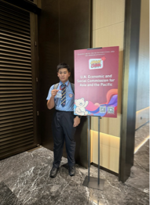
Team Member
I am 14, and love reading all sorts of books. I am someone who thinks technology is useful in work, and I would prefer to work with the aid of Artificial Intelligence. If something is wrong, please feel free to walk up or interrupt me in mid-sentence.
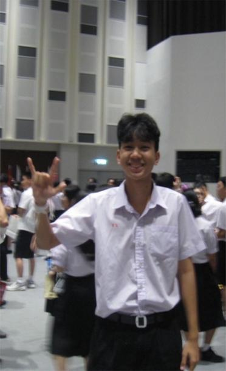
Team Member
Hi, I'm arty. A guy that want to help the world by create an innovation especially in biology field and engineering field.However if it a things that can help our planet ,I'll do it .I enjoy doing things that keep me active and I would like it to be group activities , I love to talk and exchange knowledge with others regardless of the field.Therefore participating in IDEC team will not only help me to grow my biology knowledge but also develop my teamwork skill. I look forward to continuously learn and fully contribute to achieve our goals.
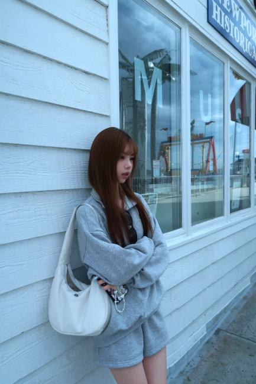
Team Member
Hello everyone, I’m Flora. I’m deeply curious about biology and have a strong enthusiasm for this field. In our team, I mainly take part in experimental work and group collaboration.Joining the iDEC competition was a meaningful experience for me. It gave me the chance to explore advanced ideas in biological design, while also helping me learn how to communicate effectively and solve problems with teammates. I look forward to making my own contribution and working with everyone to bring creative ideas to life.
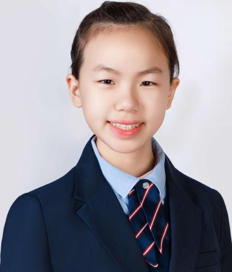
Team Member
Hello everyone! I’m Yvonne, currently in my second year of college. I’m excited to bring my solid foundation in chemistry and biology into this iGEM project.This will be my first experience working in a research lab, and I’m really looking forward to learning more about the fast-developing area of synthetic biology through hands-on experiments. In my free time, I like winter sports, especially skating :)
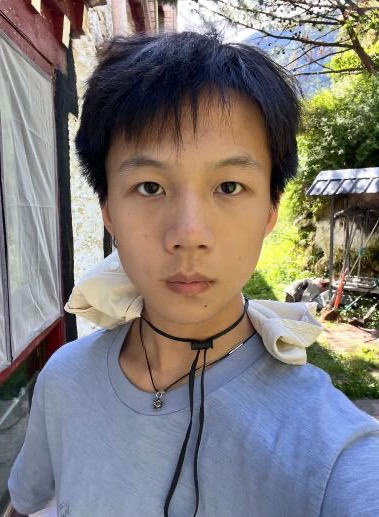
Team Member
My name is Charles, and I’m very happy to meet everyone through iGEM. I enjoy working as part of the team’s design group, where I can collaborate with dry lab members on tasks such as website and logo design.I’m also interested in both theoretical study and practical research, so I hope to work closely with wet lab teammates to tackle experimental challenges together.I hope we will have a wonderful experience at iGEM. Best of luck to all of us!
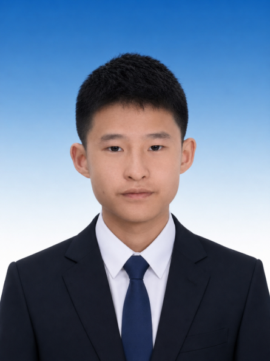
Team Member
Hi everyone, my name is Gavin. I’m truly glad to become a member of our iGEM team and take part in this exciting synthetic biology project.I consider myself hardworking and quick to learn, and I’m prepared to devote enough time and energy to support our team’s success. I look forward to working with all of you and gaining knowledge from your valuable experience.
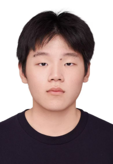
Team Member
I’m SIMPSON Zhong from Shanghai New Epoch Bilingual School. In our team, I’m responsible for product promotion and collecting feedback from the public.It is a great honor for me to take part in this program. This experience has not only broadened my professional knowledge, but also allowed me to make meaningful contributions to our community and even society. Through this process, I have gained valuable experience in this field, as well as more patience and confidence when facing other challenges in life.
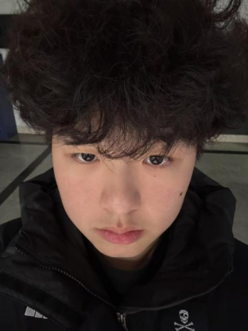
Team Member
My name is Gan Bohang, and I come from Shanghai, China. I enjoy playing football because being on the field always brings me happiness and excitement.I also like listening to music, which helps me relax and unwind. Whenever I feel stressed or overwhelmed, I turn to sports or music to release pressure and feel more comfortable.
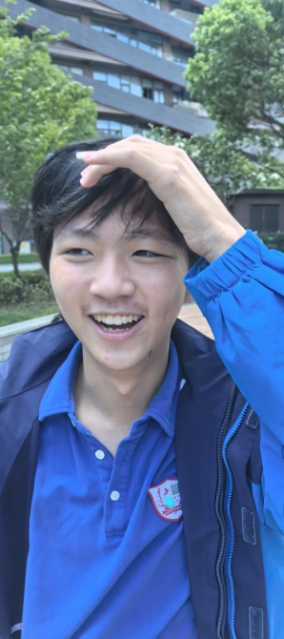
Team Member
I’m YUEYANG DU from Shanghai New Epoch Bilingual School, and I work as part of the fieldwork team. Joining this program has been a valuable and meaningful experience for me.
Through this opportunity, I gained a deeper understanding of how we communicate with the public. I also learned the importance of teamwork and responsibility when completing real-world tasks. This experience has helped me develop both personally and professionally, and it has encouraged me to face future challenges with more confidence and determination.
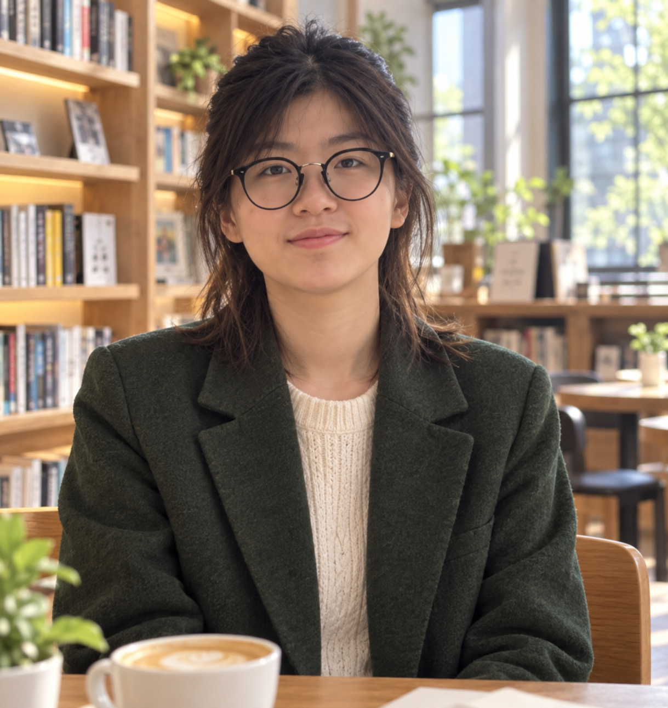
Team Member
Hi folks, I'm Jenny Wang. This is my first time taking part in GEM. I am an Easy-going person, so l am looking forward to work with you guys. Also, I am pretty enthusiastic about doing experiments and hope we can have a wonderful memory throughout this event.
Can't wait to meet you all soon and embark on this exciting journey alongside all of you!
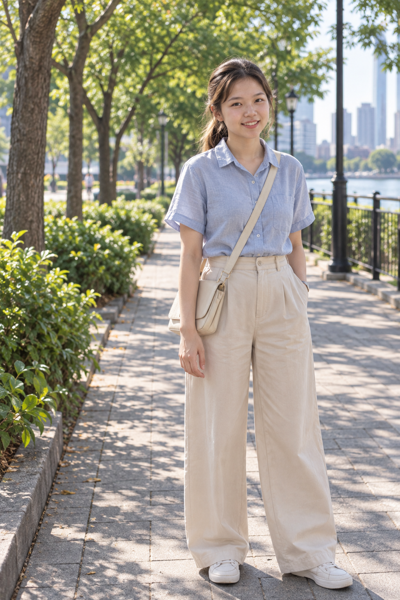
Team Member
Hello everyone! My name is Noelle, and I come from Shanghai. My previous research experience was mainly related to cancer studies, which helped me develop a stronger interest in life sciences and medical research. I’m excited to join this team and look forward to learning, collaborating, and contributing together with everyone.
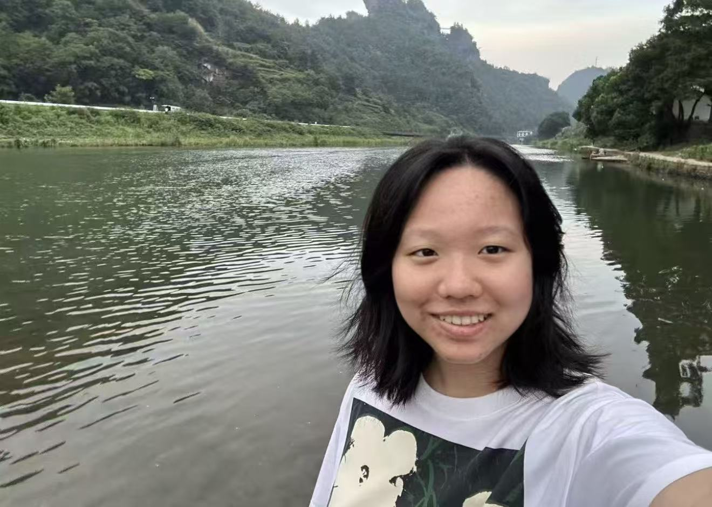
Team Member
Hi everyone, I’m Celine,I’m interested in biology, public health, and cultural history, especially how science can help us understand human health across time.In the future, I hope to use biology, data analysis, and molecular tools to study public health issues, from ancient microbial ecosystems to today’s microplastic challenges.
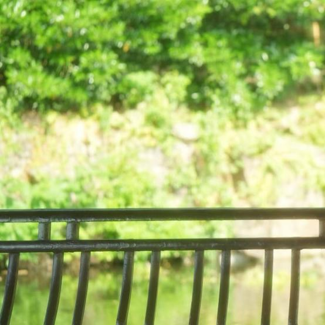
Team Member
Hi! I’m Peilin Zhu. I’m very happy to join this team.
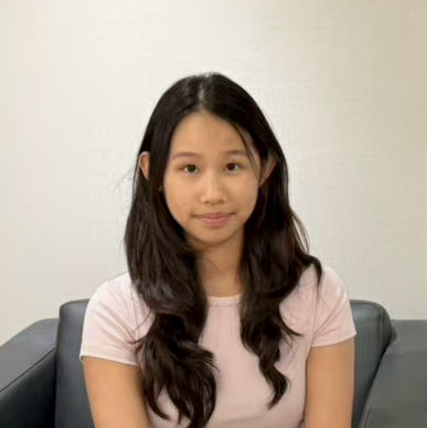
Team Member
Hi everyone, I’m Qingxin. I’m passionate about life science and enjoy exploring how biology can be used to solve real-world problems. I hope to take part in both research and teamwork during this project, while improving my communication and problem-solving skills. I’m looking forward to collaborating with all of you.
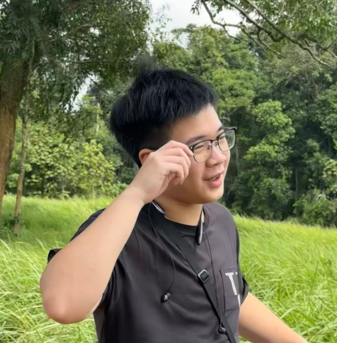
Team Member
Hi everyone, I’m Chenming. I’m interested in biology and computer science, especially how data analysis can help us better understand scientific problems. In this team, I hope to contribute to research, modeling, and project development. I’m excited to learn from everyone and work together to make our project successful.
Supervisor
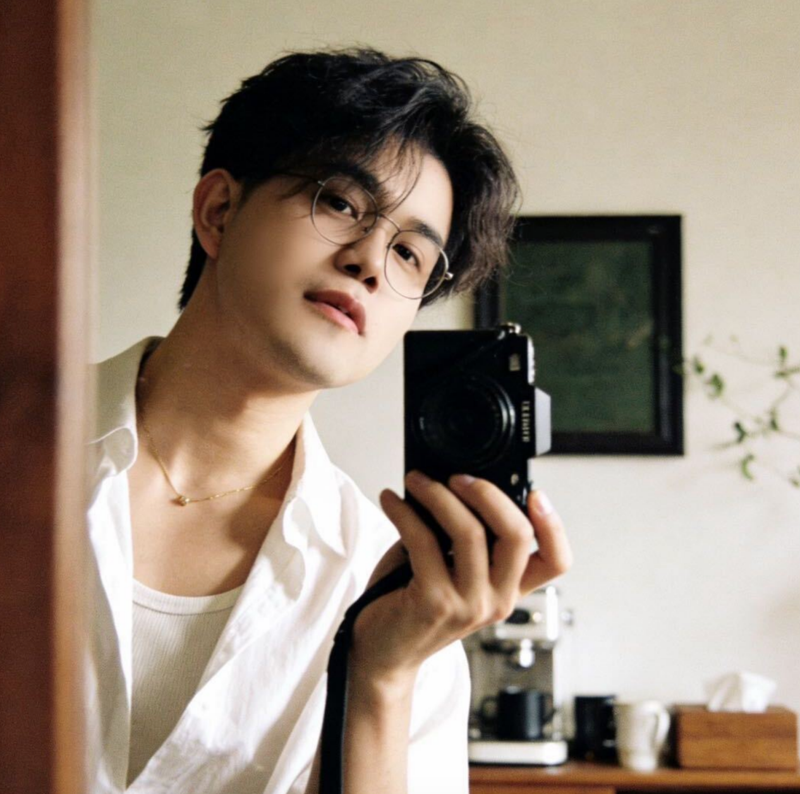
Supervisor
Hi! I'm Jiayi. My research focuses on computational chemistry and structural bioinformatics. Glad to have the chance to work with our team and explore how to produce nutritious and sustainable pet food.